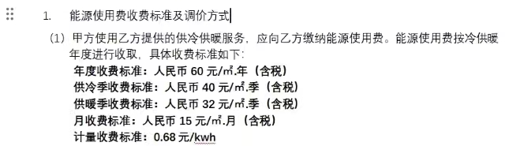

什么是集中供能
集中供能是通过区域能源站为片区提供统一、高效的集中供暖与供冷服务，以替代传统分散式空调和地暖系统。
提供24小时不间断供能，不需要安装空调主机和锅炉等（室内机和地暖管道业主自理），提升居住舒适度。
可以理解为冷气和暖气入户（类比自来水和燃气入户），室内做好与集中供能管道的接驳即可。
为什么我们要加装集中供能
梅溪湖二期共设置五个能源站， 供能范围覆盖整个梅溪湖二期，天青府位于F区能源站供能范围内（F 区能源站位于天青府东南方， 距离很近） 。
梅二新盘都带集中供能， 天青府所在的未来社区所有楼盘都将带集中供能，天青府洋房也有供能， 只有几栋高层及小高层没有。
天青府只有一个设备平台，不方便安装分体空调，只能装中央空调或者集中供能。
集中供能与中央空调对比
对比维度 |
集中供能 |
中央空调+地暖 |
|---|---|---|
初装成本 |
加装费用（换热站建设费用+管道铺设费用+接入费）：3w~4w（加入的邻居越多，此部分费用就更少） |
中央空调：3w-4w（按一拖五测算，品牌不同价格会有差异） |
使用成本 |
包年约8000~10500元 + 少量室内设备电费（按包年60元每平计算，60乘以房本面积），全年9个月（供冷5.15~10.15,供暖11.15~3.15），24小时制冷制暖 |
可自己控制，使用灵活，制冷价格约500元-800元/月（看个人使用情况）采暖价格约1000+元/月 |
使用体验 |
冷风柔和、湿度适宜，无外机噪音，无干燥感 |
外机有噪音，灰尘，空气较干燥 |
空间占用 |
没有外机，可节省设备平台的空间 |
外机占用设备平台，会遮挡公卫采光，且外机会有灰尘，难清理 |
使用寿命 |
30年 |
10-15年，需更换设备 |
维护 |
能源站统一运维 |
需定期清理维护设备，如果出现问题，可能会拆吊顶或地板 |
集中供能的使用成本可根据个人情况，选择包年、包月、包季(供冷季5.15~10.15，供暖季11.15~3.15)、按流量等； 不考虑使用成本的情况下，集中供能的初装成本比中央空调多1-2w
桂语云峰收费标准 
集中供能优缺点
优点
更舒适，24小时标准恒温、全屋360度无死角；温度湿度适宜，体感更舒适
更经济，同样使用的条件下，年使用费可节省大约37%；无需承担主机维护费用及寿命到期置换费用
房产保值，集中供能成为新住宅标配，未来没有集中供能的房子将被压价
缺点
需要安装地暖才最经济，若无地暖需求，其实不经济
使用不灵活，3.15-5.15期间不供能，若天气热，需要自己解决
能源站供能效果未知，若出现故障，则影响全区使用